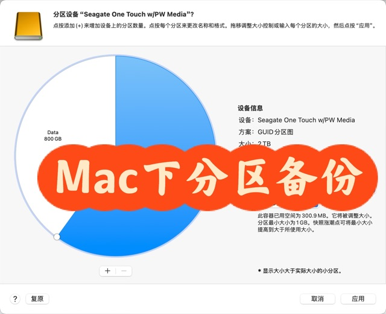
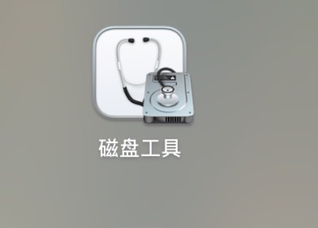
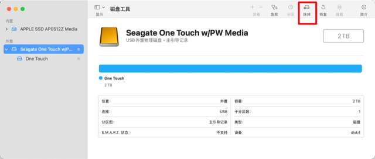
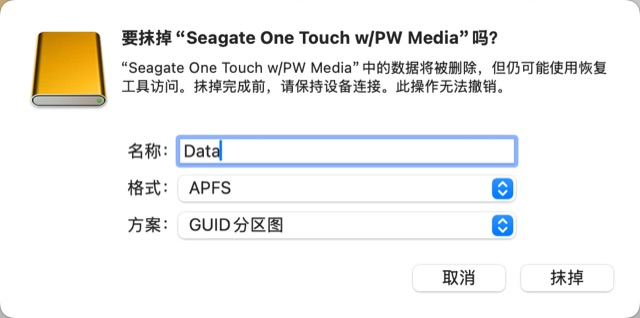
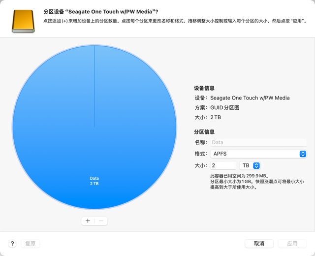
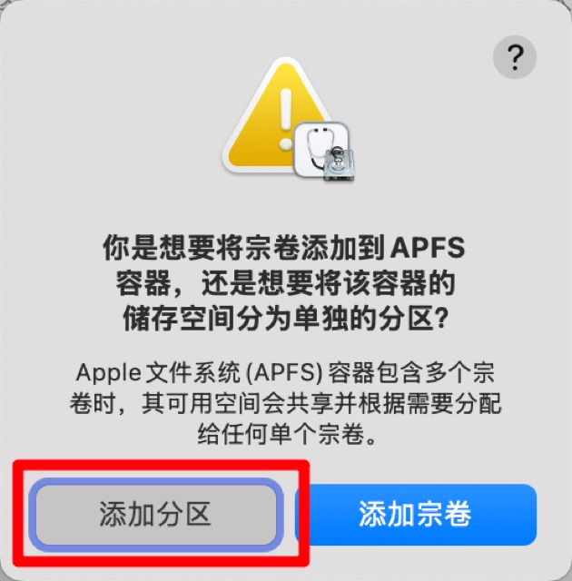
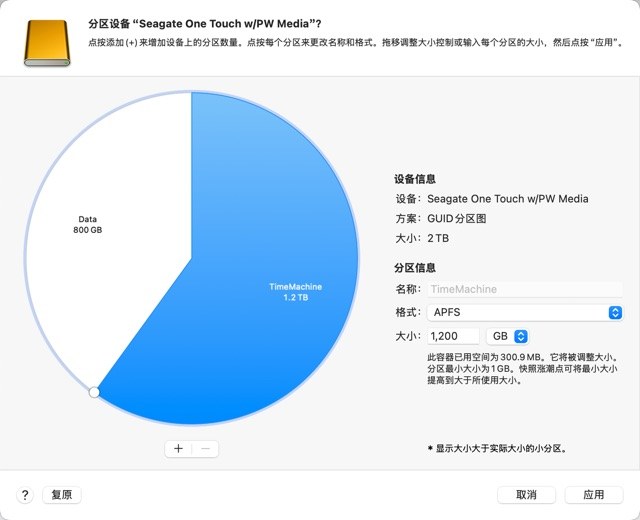
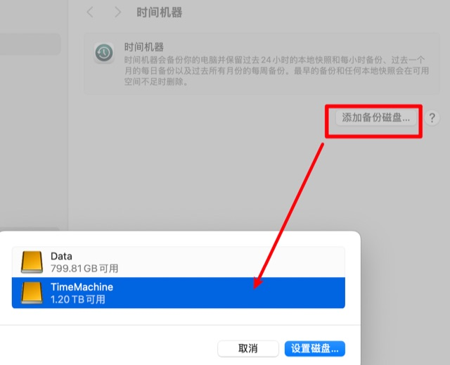
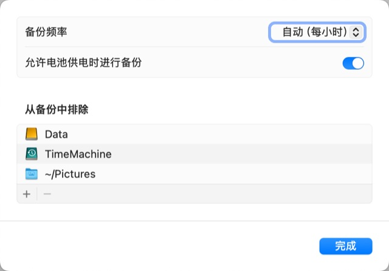

小红书搜索「mac 时光机器」,爬取 15 篇帖子(全部通过完整性校验),综合其中 13 篇 与评论区,整理出这份指南。最热的一篇有 1714 个赞——一位考生误删了复习资料,靠时间机器找了回来。
- 硬盘:外置硬盘一块,容量至少 ≥ 需要备份的数据量(有博主建议 2 倍或 ≥ 电脑硬盘容量)。机械盘即可,但小文件多时固态明显更快。
- ⚠️ 首次备份会格式化硬盘,原数据会被清空——先转移盘里的重要文件,最好用专用备份盘。
- 硬盘直插 Mac,不要过 USB 集线器;笔记本首次备份建议插着电源跑完。
- 想一块盘既备份又存文件:先在磁盘工具里分区——左侧选最顶层设备(勾选"显示所有设备")→ 抹掉(格式选 APFS)→ 分区 → "+"添加分区 → 应用。500G 数据首次分区备份约 2 小时,中途千万别断电、别拔盘。
- 系统设置 → 通用 → 时间机器(Time Machine)
- 点添加备份磁盘,选择外接硬盘
- 点设置磁盘,可选加密备份(强烈建议开;密码务必记住,忘了备份就作废;提示存钥匙串时点"始终允许")
- 等首次备份完成;以后插上硬盘就自动备份
可选调整(在"选项"里):备份频率(每小时/每天/每周/手动,默认每小时)、排除文件夹(如大视频、 "下载"目录)、笔记本可勾选"电池供电时备份"。
- 增量备份:只备份变动部分,不是每次全盘复制。
- 快照策略:过去 24 小时每小时一份、过去一个月每天一份、更早每周一份;盘满自动删除最早的备份。
- 没插硬盘时,Mac 也会在本地生成快照(最多保留 24 小时),误删文件可临时救急。
- 进度看菜单栏时间机器图标;也可随时点"立即备份"手动触发;完成后先推出硬盘再拔。
- 找回误删/旧版文件:打开时间机器 App,沿时间线滑到任意时间点,点"恢复"即可,不用关机。
- 整机恢复:关机后按住 Option 开机进恢复界面,从备份还原系统和设置。
- 换新 Mac:用"迁移助理"从时间机器备份一次性转移全部数据、软件和设置(微信聊天记录等本地数据都会跟着走)。
本来觉得一部分内容不会考就删了,结果之后发现有个重点正好在那一面——真的可以恢复,而且界面这么漂亮。 —— 《Mac时间机器你太牛了》· 1714 赞 / 930 藏 / 70 评
- iCloud ≠ 备份:iCloud 是同步,时间机器是备份,不能互相替代。同时开着 iCloud"桌面与文稿"同步时,没下载到本地的文件时间机器备不到;若桌面没被备份,检查"从备份中排除"列表。
- 加密密码丢了 = 备份作废,一定存钥匙串。
- 备份巨慢的元凶是小文件:12G 的 WhatsApp 数据含 187 万个小文件,预估 22 小时;把该目录加入排除清单后 10 分钟跑完。
- 系统降级不能靠时间机器直接恢复:从新版降回旧版要走"重装旧系统 + 迁移助理搬数据",折腾数小时。想尝鲜新系统,装到外接 SSD 上玩,别动主力机。
- 网络盘/NAS 备份需支持相应协议,否则容易连接失败;NAS 上划 1T 有用户反馈只保留近三天备份,行为和本地盘不完全一样。
- 别只留一份备份:机械硬盘 + NAS 双份轮备,防单点故障;电脑送修/升级系统前务必先备一次。
- 备份失败时:检查硬盘连接,用磁盘工具的"急救"修复磁盘。
1Mac时间机器你太牛了 科技便利人类呀1714/930/70
本来觉得一部分内容不会考就删了一面 结果之后发现有个重点正好在那一面 无奈已经保存 找不到源文件出处 就随便探索了一下这个软件的功能 真的可以恢复而且界面这么漂亮 太牛了 又赚五毛 Apple我受你一靠子#电脑小白[话题]# #macbook[话题]# #预览[话题]#
2苹果mac最佳备份工具-「时间机器」操作指南177/165/24
macbook电脑除了使用iCloud云备份以外，还有免费的本地备份方式，超级好用且免费[火R]。那就是自带的软件「时间机器」Time machine，我个人的使用频率特别高，所以给大家出个教程，手把手教大家如何使用： [打卡R]提前准备：足够备份容量的移动硬盘，连接上macbook，建议大家选个好一点的硬盘，我长期使用的是致态1T。（⚠️注意，首次备份会清除硬盘内容） 🕰️具体操作： 1.插上硬盘后，打开系统设置，选择「通用」-「时间机器」 2.选择「添加备份磁盘」，会弹出磁盘窗口，选择我们准备好的磁盘。这里可以「设置磁盘」，设置加密备份、磁盘使用率等选项。 3.选择好磁盘后，系统将开始自动备份，在「选项」里可以自己选择备份频率，我通常是选择默认的备份。 4.备份过程中，状态栏有备份图标，选择可以看到备份进度，备份完成后会弹窗通知提示。 确定备份完成后，可以去文件管理器推出硬盘，就可以拔掉硬盘啦。 以后插上硬盘，系统会自动备份，特别方便，当然也可以手动选择备份。 [打卡R]恢复备份：需要备份时，打开时间机器app，选择相应的时间节点就可以恢复备份啦，特别有时间机器回到过去的感觉。 大家可以养定期备份的好习惯，特别是电脑出现一定故障现象或者维修前，一定一定一定要备份数据⚠️。 我给客户扩容硬盘前都会再三沟通客户自行备份数据，以免数据丢失，毕竟电脑有价，数据无价。 有任何问题欢迎评论或私信，我会尽力解答[害羞R] #macbook[话题]# #电脑知识[话题]# #备份[话题]# #备份神器[话题]# #时间机器[话题]# #mac[话题]# #硬盘[话题]# #扩容[话题]# #成都南站 [poi_v2]#
3Mac自带的“后悔药”，很多人都没开🍎113/106/20
小小闲置硬盘发挥大作用！ MacBook其实自带一个很实用、但藏得有点深的功能——【时间机器 Time Machine】。设置一次，就能自动备份照片、文稿和其他重要文件，误删或改错后还能按照日期找回旧版本。 设置只要4步： 1️⃣ 把闲置硬盘连接到Mac 2️⃣ 打开「系统设置」→「通用」→「时间机器」 3️⃣ 点击「添加备份磁盘」，选择你的硬盘 4️⃣ 点击「设置磁盘」，等待首次备份完成 之后只要连接硬盘，Mac就会按照你的设置自动备份[耶R] 再也不用手动一个个文件复制拖动，直接解放双手[派对R] ⚠️ 注意：如果系统提示需要“抹掉”或格式化硬盘，原有文件会被删除！一定要先转移重要资料，最好使用专门的备份硬盘。 几分钟设置，就相当于给电脑加了一颗“后悔药”。 建议先收藏，回家把吃灰的硬盘利用起来～ #MacBook使用技巧[话题]# #苹果电脑[话题]# #时间机器[话题]# #数码干货[话题]# #电脑备份[话题]# #Mac技巧[话题]# #效率工具[话题]##科研[话题]#
4Mac分区外置硬盘并使用时间机器106/102/2
因为苹果系统需要APFS格式，搞了个新硬盘进行备份，但是又希望一部分用来备份一部分用来传输数据，这个时候需要用到分区与时间机器。 时间机器很好用！可以回到任意一个时间的状态，也可以单独恢复那个时间点的文件。其进行的是增量备份，只有改动了才会备份。科研必备呀，哈哈（Mac用户） 格式化磁盘并分区 1. 插入硬盘，搜索磁盘工具 图2️⃣ 2. 在显示那里要求选上“显示所有设备” 3. 新硬盘一般需要抹掉工具，点击抹掉 图3️⃣ 4. 抹掉完成后选择分区按钮 5. 设置名称为TimeMachine，选择APFS（如果需要加密的话就选加密，但是时间机器也会加密，所以应该也不需要）图4️⃣（换了个名） 6. 点击左下角的+，并且选择“添加分区” 图4️⃣5️⃣与图6️⃣ 7. 设置分区的大小与名称 8. 应用 使用时间机器 1. 搜索时间机器 2. 选择刚才分区的TimeMachine 图7️⃣ 3. 设置选项排除不需要的部分 图8️⃣ 一般来说，初次分区需要的时间较长，我大概500G数据花了接近两个小时 一定要确保中途不要断电！！！ #MacOS[话题]# #移动硬盘[话题]# #电脑知识[话题]# #macbook[话题]# #硬盘分区[话题]# #时间机器[话题]# #备份[话题]# #希捷[话题]# #SEAGATE[话题]# #TimeMachine[话题]#









5Mac时光机器｜普通人10分钟搞定硬盘备份🔥80/78/1
第1步：清空硬盘（2分钟） 磁盘工具 → 左侧选最顶层硬盘 → 右上角「抹掉」 名称：随便填 格式：APFS 点「抹掉」 第2步：分3个区（5分钟） 点「分区」 → 点「+」添加2次，共3个区：（如图） 点「应用」 → 等进度条走完 第3步：开启自动备份（3分钟） 系统设置 → 通用 → Time Machine 点「添加备份磁盘」 选「Time Machine」分区 设个密码记得存钥匙串！点「完成」 ✅ 首次备份会自动开始，插着电源让它自己跑 ⚠️ 唯一注意点 密码一定要记住！ 忘了备份就废了 建议：系统会提示存钥匙串，点「始终允许」 搞定！ ✅ 每小时自动备份，误删文件能找回 ✅ 系统崩溃能自救，按住Option键启动 ✅ 大文件有地方存，不占用Mac空间 #Mac[话题]# #时间机器[话题]# #备份[话题]# #数据安全[话题]# #macbook[话题]# #苹果备份[话题]#
6Macbook数据备份还原，时间机器怎么用57/45/8
TIME MACHINE时间机器使用全解，但也不是万能哦#硬核测评局[话题]# #macbook[话题]# #苹果电脑[话题]#
7Mac使用教程 —救电脑神器：时间机器37/24/15
在macOS中，有一项在特殊情况可以救电脑数据的一命的系统工具，那就是时间机器 首先你得准备一块大于或等于电脑硬盘容量的外置硬盘 时间机器本质上就是一种自动备份，接下来就让我来详细解释一下里面的功能 设置方式：系统设置App - 通用 - 时间机器，如图2、3 备份频率：你可以选择电脑自动备份的频率，有每小时、每天、每周自动备份，和手动点击备份 从备份中排除：也就是将某个硬盘排除备份 备份后时间机器进入方式：点击桌面上的Backup（时间机器磁盘映像）- 进入时间机器，若要恢复，滑倒任意备份时间线，点击“恢复”即可。 优势：时间机器可以进行自动备份，并且是系统应用。其次，他的备份逻辑是基于新增或删减，增减备份内容，并不是每次直接全盘备份，节省空间 感谢您能看到这里，如果觉得对你有帮助，不放点个赞和关注，谢谢啦～#macbook[话题]#
8Mac 里这个功能太低调，但真的能救命32/30/4
很多 Mac 用户每天都在用电脑工作、学习、剪视频，却一直没打开过 Time Machine（时间机器）。 它平时几乎没有存在感，但真正遇到这些情况时，你就会发现它有多重要： ✅ 误删文件 ✅ 找回旧版本 ✅ 系统升级前备份 ✅ 换新 Mac 迁移数据 ✅ 硬盘异常后的恢复 很多人觉得有 iCloud 就够了，其实 iCloud 更偏同步，Time Machine 更偏备份，两者并不能完全替代。 如果你的 Mac 里有重要资料，建议花几分钟把 Time Machine 配置好，希望你永远用不上，但关键时刻它真的能救命。 💾 建议先收藏，等需要的时候就知道它有多香。 #Mac[话题]# #Mac技巧[话题]# #MacBook[话题]# #苹果电脑[话题]# #时间机器[话题]# #TimeMachine[话题]# #Mac新手[话题]# #Mac教程[话题]# #电脑技巧[话题]# #效率工具[话题]# #数据备份[话题]# #文件恢复[话题]#
9Mac时间机器备份教程✅新手零失败｜31/22/1
操作巨简单，新手也能一次搞定 [一R]前期准备（必看！） ▫️ 外置硬盘1个：容量至少是需要备份内容的2倍 ▫️ 确保Mac是macOS Ventura 13及以上版本（旧版本步骤稍有差异） ▫️ 硬盘提前清空，只用来做时间机器备份，别存其他文件 💡 Step1：连接硬盘，开启时间机器设置 1. 把外置硬盘插入Mac的对应接口，确保直接连接，不要用USB集线器 2. 点「苹果图标」→ 选择「系统设置」 3. 在左侧边栏找到「通用」，点击右侧的「时间机器」 💡Step2：添加备份磁盘，完成基础设置 1. 在时间机器界面后，点击「添加备份磁盘」（或右上角+号） 2. 在弹出的窗口中，选择你连接的外置硬盘，点击「设置磁盘」，此时会弹出提示（可选）： - 询问是否抹掉硬盘：点击「抹掉」（会清空硬盘用于备份） - 询问是否加密备份：建议打开，设置备份密码（防止他人访问，密码一定要记好！） 💡Step3：自定义备份选项（可选，按需设置） 1. 点击时间机器界面的「选项」，可以设置2个实用功能： - 备份频率：选择自动备份（每小时/每天/每周）或手动备份 - 排除文件：添加不需要备份的文件夹（比如大体积视频、临时文件，节省硬盘空间） 2. 笔记本用户可勾选「允许电池供电时进行备份」，随时备份不耽误 💡 Step4：开始备份，查看进度 1. 设置完成后，Mac会自动开始首次备份（首次备份时间较长，耐心等待，期间可正常使用Mac） 2. 查看进度：点击菜单栏的「时间机器图标」（若没有，在控制中心设置显示），顶部会显示备份完成百分比 3. 手动备份：点击菜单栏时间机器图标→选择「立即备份」，随时触发备份 新手避坑指南 ❌ 不要中途断开硬盘，会导致备份失败，断开前需推出硬盘或关机 ❌ 备份磁盘满了会自动删除最早的备份 ❌ 不要用网络磁盘备份（除非支持AFP协议），容易出现连接失败问题 ✅ 备份失败解决：检查磁盘连接、用「磁盘工具」修复磁盘 💡 补充知识点 时间机器会自动保存：过去24小时每小时备份、过去1个月每日备份、过去所有月份每周备份 即使断开硬盘，Mac也会创建本地快照（最多保存24小时），误删文件可临时恢复 总结：全程5分钟搞定设置，后续自动备份，再也不怕数据丢失 #Mac教程[话题]# #时间机器备份[话题]# #Mac数据备份[话题]# #苹果电脑使用技巧[话题]# #新手Mac攻略[话题]# #Mac避坑[话题]# #苹果时间机器[话题]#
10𝟔.💻人生没有后悔药，但Mac有！24/16/1
✨这是什么神仙功能？ 苹果系统自带的「后悔药」！ 自动备份你电脑的每一个瞬间 文件误删/系统崩溃/手滑覆盖… 直接穿越回「事故前」的状态！ 💡为什么我劝你立刻设置？ 1️⃣ 完全免费！不用白不用 2️⃣ 自动运行，插上硬盘就备份 3️⃣ 拯救社死现场（比如把PSD当垃圾删了） 4️⃣ 换新Mac时能无缝转移所有数据 （配图：新旧Mac传输数据对比动图） 🔧超简单设置教程 ✅ 准备：外接硬盘/U盘（建议500G+） 1️⃣ 【系统设置】-【通用】-【TimeMachine】 2️⃣ 选择你的外接硬盘（会自动格式化） 3️⃣ 打开【自动备份】就搞定！ 💬真实救命案例 ▫️客户方案被覆盖→找回3小时前的版本 ▫️系统更新失败→直接还原到昨天 ▫️熊孩子乱删游戏存档→秒恢复 互动提问： 你们有经历过数据崩溃瞬间吗？ 关注免费亲自教学如何使用 #Mac技巧[话题]# #TimeMachine[话题]# #苹果隐藏功能[话题]# #mac[话题]# #软件[话题]# #打工人必备[话题]# #数据恢复[话题]# #数码小白[话题]#
11🆘换了Mac，Codex的对话全没了7/10/4
从 Windows 换到 Mac，代码最省事，clone 一下就回来了。 真正卡了我三天的是 Codex：聊过的问题、做到一半的项目、攒下的 Skill，全在本地。 我以为复制几个目录就行。实际才发现这是四件事：文件到了、列表出来了、会话能打开、工作能接着做。 ▍第一刀就砍错了 259 个会话，我只找到 35 个 JSONL，看着像丢了一大片。 其实还有 502 个 .jsonl.zst 压缩卷——*.jsonl 根本搜不到。 长会话会拆成多个分卷，后台子会话也不等于界面上的对话。文件数、索引 ID 数、聊天数，从来不是一回事。 ▍数据库完整 ≠ 历史能读 检查通过只说明结构没坏。改完路径重写 JSON，字节长度一变，分卷里记的读取位置就失效，报 cutoff byte offset is past the source rollout。 ▍算不算搬完 94 个会话读取成功，96 次分页读到 25,409 条，错误为零。 但项目依赖、续聊、定时任务我没逐一验收。旧任务恢复了，不代表它能立刻继续对外发东西。 判断搬完没有，我现在会多问一句：不只是东西还在不在，还有下一步能不能接着做。 方法整理成了开源 Skill：migrate-codex。 下篇讲 Hermes，那个更麻烦，因为官方备份有坑。 #codex[话题]# #vibecoding[话题]# #AI工具[话题]# #个人开发者[话题]# #Windows[话题]# #Mac[话题]# #Macbook[话题]# #数据迁移[话题]#
12想从新系统降级？ Time Machine也顶不住3/2/3
把新系统装到外接SSD没成功，反倒把主力机升了级，想降回来时才发现——一直以为很稳的Time Machine备份，这时候也顶不住。 先说个好消息，Mac的迁移和数据备份其实很简单： 1️⃣ 插上硬盘，Mac会问"是否用作备份盘？"硬盘里没重要数据就点是，它会自动格式化，设好备份频率就能用。数据重要就每小时一次，硬盘是增量备份，满了自动删最早的备份💾 2️⃣ 除了频率，还能勾选排除的文件夹，比如一直下东西的"下载"夹，没重要数据就排掉，省不少空间 3️⃣ 别只留一份，我现在是机械硬盘+NAS两份轮流备，防的一个挂了还有另一个 恢复也分两种： 1️⃣ 恢复文件——单个文件误删/丢失，不用关机，回看备份时间点找回就行 2️⃣ 恢复系统——连软件带设置一起重来，要关机进恢复界面 但要命的坑在降级： 我从 macOS14.8 升到 27，想降回 14.8，选昨晚的备份竟然提示——只能走迁移助理，不能直接恢复。"低升高啥都好说，高降低咋都难办"，忘了苹果这尿性😤 然后就是漫长的重装：恢复界面默认给的是最新系统，要装旧版得自己去 App Store 下对应版本。重装→报错→再重装→迁移助理又搬了两小时，才终于回到熟悉的 14.8。太折腾了 最后学聪明了：想体验新系统，把外接SSD直接接电脑本体（别插扩展坞），恢复界面里清楚选预留盘，一步装到SSD，再到设置里升测试版27，稳🆒 实在的忠告：手上有重要数据的，Time Machine一定要开，而且要双份。想玩新系统又怕翻车，先装到移动SSD，别拿主力机冒险。 你手头的 Mac，备份开了吗？要是连 Time Machine 都还没设，这篇看完先去开上🫡 #MacBook[话题]# #重装系统[话题]# #TimeMachine[话题]# #Mac备份[话题]# #数据迁移[话题]# #榨干设备howto[话题]# #macbook[话题]# #Mac[话题]# #系统更新[话题]# #实用数码技巧分享[话题]#
13mac时间机器磁盘空间已满2/1/4
我的MacBook air是256G的，实际使用不到200G，我在极空间给它划出了1T的空间做时间机器备份，目前已使用900G，为啥他不能删除旧的备份来腾出空间呢？而且我浏览备份发现只有今天、昨天、前天三个备份#MacBook[话题]# #时间机器[话题]# #Mac数据备份[话题]# #苹果电脑[话题]# #macos[话题]#
14MacBook用时间机器备份需超长时间解决办法1/1/1
今天给macbook备份，插上移动硬盘打开时光机 结果从最初的1小时变成了22小时，而且还在不停延时，卡在47%-48%进度缓慢 于是赶紧去找GPT，最终判断是whatsapp备份文件问题，只占12G但有187万个小文件，难怪那么慢 一步一步按提示排除出备份清单，10分钟备份完毕 世界清净了 #timemachine[话题]# #时光机器备份[话题]# #whatsapp罪魁祸首[话题]#
15Mac截图工具-晾衣绳-新增三个功能版7/6/1
之前看到Tendedero这款工具设计得挺有意思的，所以就拿来用。用着用着，给它增加了三个新功能，现在用起来特别顺手，尤其是经常要截图发给AI的时候。 比绿泡泡的截图，少了一个点击确认的步骤哈哈哈（很懒就是了）👀 它可以： 📌 截图集中收纳：截图收在屏幕顶部，要用的时候随手找，不用翻桌面找文件 ⚡ 少点一次确认：框选截图后直接复制，不用再点右下角的勾，接着就能粘贴 ✏️ 图片随手编辑：画框、加箭头、写文字，把想说的重点直接标出来 🧩 马赛克遮挡：账号、姓名、不想展示的内容，打码后再分享 🔤 提取图片文字：图片里的文字也能提取，少一点对着屏幕手敲 💾 另存为：想留下的截图，选好文件夹、换个名字，单独存一份 🗑️ 一键移到废纸篓：临时截图用完随手清，不让截图越攒越多 💻 免费使用：支持 macOS 14 及以上，Intel 和 Apple Silicon 的 Mac 都能用。 关于怎么修改截图快捷键，Control+a挺方便的嘿嘿，可以看我上一条视频，开启自启也能设置[飞吻R] 需要什么新功能可交流完善喔，详情见最后一张图～ #办公神器howto[话题]# #我的AI办公搭子[话题]# #Mac截图[话题]# #Mac工具[话题]#